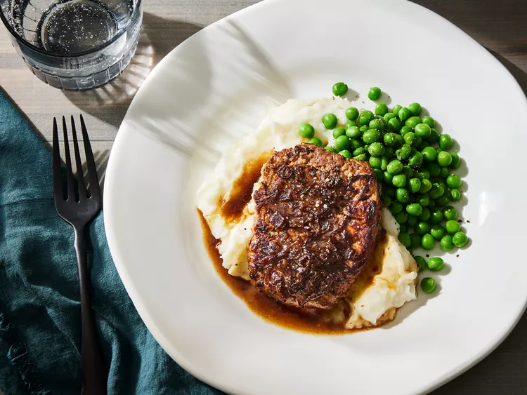

4 (1/2 pound) cube steaks (pounded round meat)
1 (10.5 ounce) can condensed French onion soup
Step 1
Gather all ingredients. Preheat the oven to 350 degrees F (175 degrees C).
Step 2
Sear steaks in a large skillet over medium heat, 2 to 4 minutes per side.
Step 3
Transfer steaks to a 9x13-inch baking dish. Pour condensed soup over top.
Step 4
Bake in the preheated oven until tender and slightly pink in the center, about 1 hour. An instant-read thermometer inserted into the center should read 140 degrees F (60 degrees C) for medium doneness.